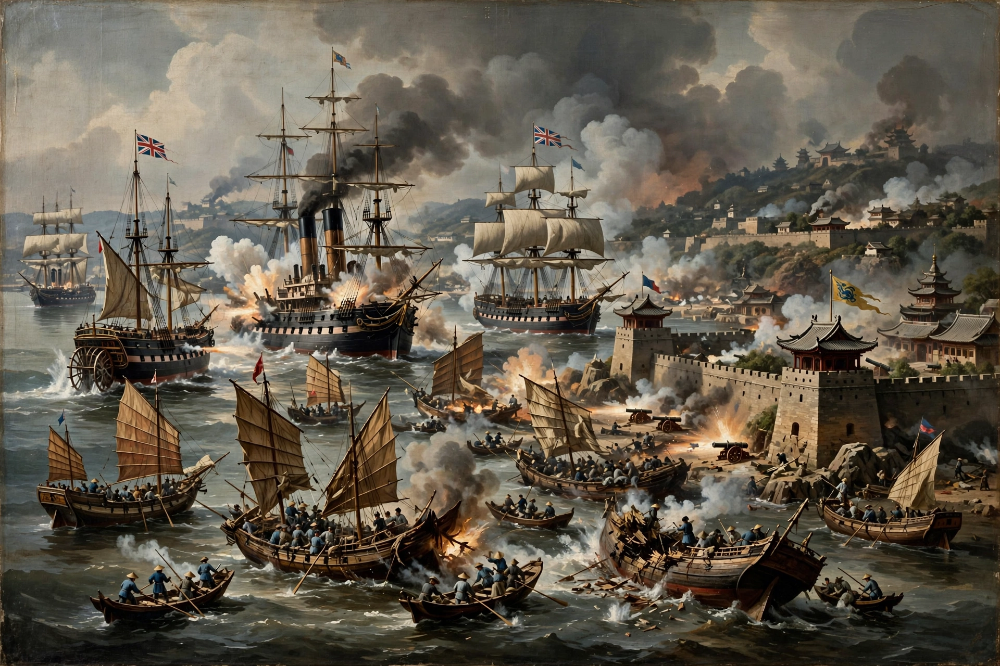

The Opium Wars were two conflicts between Qing China and Western powers in the mid-19th century: the First Opium War (1839–1842) with Britain, and the Second Opium War (1856–1860), also called the Arrow War, with Britain and France. They arose from disputes over trade, diplomatic equality, and the British trade in opium from India.

Britain sought Chinese tea, silk and porcelain but had little China wanted except silver, until merchants developed a lucrative opium trade. Commissioner Lin Zexu's seizure of opium at Canton in 1839 triggered British retaliation under the Daoguang Emperor's reign.
Superior British naval power blockaded ports, seized Zhoushan and threatened Nanjing. The Treaty of Nanking (1842) opened five ports, abolished the Cohong monopoly, fixed tariffs, granted extraterritoriality in later supplementary treaties, and ceded Hong Kong Island.
The seizure of the lorcha Arrow in 1856 led to war; Anglo-French forces took Canton, won at Tianjin in 1858 — see Treaty of Tianjin — and in 1860 marched on Beijing, looting the Old Summer Palace. The Convention of Peking added Kowloon, opened Tianjin, and legalised opium.
The wars began China's "century of humiliation", spurred the Self-Strengthening Movement, and reshaped East Asian trade.